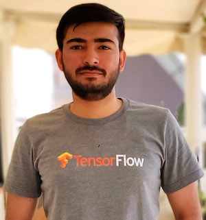

About me

I am Aakash Kumar Nain, a Senior Machine Learning Engineer (Research) at Emergence AI, bringing over 8 years of experience in building and deploying advanced deep neural networks. A strong advocate for open-source development, I actively contribute to the machine learning ecosystem: I am a core collaborator on Keras 3.0, contribute within the JAX ecosystem, and maintain the TensorFlow-addons package. My expertise and contributions across the TensorFlow, Keras, and JAX frameworks led to my recognition as a Google Developers Expert (GDE).
My current work focuses on developing Large Language Models (LLMs) and Multimodal Large Language Models(MLLMs). Building these models has led me to focus my research on:
- Identifying and mitigating bottlenecks in multimodal models.
- Investigating the reasoning capabilities and limitations of Large Language Models.
- Self-play and self-improvement in Large Language Models
- Diffusion models but for everything, including discrete data (text).
Follow me on X to get latest updates on trends in Machine Learning and Artificial Intelligence.
Publications
Transformer Layers as Painters (AAAI 2025)
This work investigates the flow of information within frozen, pretrained transformer models (both decoder-only and encoder-only architectures). Using a series of ablation experiments, we examined the functional roles and dependencies of individual layers, specifically probing whether all layers are necessary, if they exhibit redundancy (particularly middle layers), the impact of execution order on inference and task performance, and the potential for parallel execution (with and without looping).
The Ungrounded Alignment (CogSci 2025)
Though the current ML systems have advanced a lot, a key question remains unanswered: How can we build in predefined knowledge in a system where we don’t know how a given stimulus will be grounded? We investigate this as the Ungrounded Alignment Problem. This work examines a specific instance: an unsupervised learner processes image sequences representing characters from a text corpus (using an unknown font or permutation). The learner receives no labels but is evaluated on recognizing key sequential patterns, forcing it to deduce the mapping between the variable visual inputs and the correct underlying character classes.
Projects

This project provides a JAX/Equinox port of the Mistral-7B model. It features two distinct implementations: the first is a direct, 1:1 mapping from PyTorch designed primarily to demonstrate the porting process clearly for educational purposes, while the second is a fully JAX-optimized version targeting advanced users seeking performance and efficiency.

Known for generating exceptionally high-quality images compared to predecessors like GANs, diffusion models have become increasingly prominent. Yet, learners often face challenges due to the scarcity of quality learning materials and the perceived complexity of the underlying mathematics. The resources compiled in this repository are specifically structured to provide a clear and comprehensive understanding of how diffusion models work and the essential math principles they rely on.

Keeping pace with the accelerating volume of machine learning research on arXiv is a common challenge. This repository serves as a curated collection of significant papers I’ve personally annotated to highlight key concepts and insights. The annotations are intended to aid comprehension and make understanding important research more efficient for fellow practitioners and researchers.

Learn the foundational concepts and inner workings of TensorFlow and JAX with this tutorial series. It offers a unique perspective distinct from typical documentation, providing valuable insights and a deeper understanding for both beginners and advanced users aiming to build effectively with these libraries.
OSS Contributions
Keras Core Contributions
- JAX NN ops
- Merging layers
- Metrics
- Loss functions
- Applications
- Data adapters
- Code examples